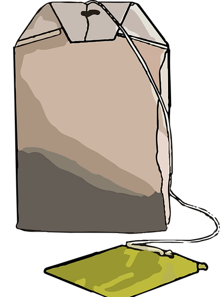

Трохи про наш продукт


Ніхто не заперечує зручності пакетованого чаю, але нехай кожен ось у цю саму хвилину згадає свої "пригоди" під час заварювання у чашці пакетованого чаю:
Ми знайшли вихід і представляємо вам "Тримач для чаю"
Це унікальний пристрій, який допоможе полегшити процес заварювання чаю у окропі. Наш тримач дозволить швидко та зручно заварити улюблений чай. Ми впевнені, що наша продукція буде корисною і практичною для любителів чаю.
Також ви можете замовити у нас тримач за власним дизайном. Наші дизайнери зв'яжуться з вами і продемонструють декілька варіантів фігурки. І за обраною вами фігуркою буде створено модель та надруковано її.